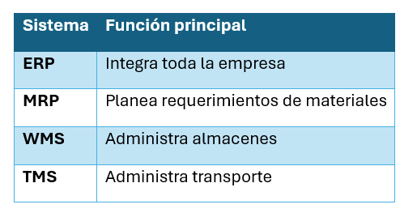

Unidad V · Tema 5.1
Sistemas de Información Logística: ERP, MRP, WMS y TMS
Actualmente, las empresas ya no administran sus operaciones mediante hojas de cálculo o registros manuales. La mayoría utiliza sistemas informáticos especializados que integran la información de compras, inventarios, producción, transporte y ventas en tiempo real.
5.1 Tecnologías de Información en la Logística
Las Tecnologías de la Información permiten:
- Automatizar procesos.
- Reducir errores operativos.
- Compartir información en tiempo real.
- Mejorar la toma de decisiones.
- Incrementar la productividad.
- Disminuir costos.
5.2 Planificación de recursos empresariales (ERP)
Sistema integral que consolida todas las áreas de una corporación en una sola base de datos unificada.
Módulos más comunes:
- Compras
- Inventarios
- Producción
- Recursos Humanos
- Finanzas
- Ventas
- Distribución
Ventajas del ERP
- Información centralizada.
- Menor duplicidad de datos.
- Mejor control administrativo.
- Mayor productividad global.
5.3 Planificación de requerimientos de materiales (MRP)
Determina qué materiales deben comprarse y cuándo deben estar disponibles para la producción.
Su objetivo principal es evitar:
- Desabasto en planta.
- Compras innecesarias.
- Inventarios excesivos.
Información que utiliza
- Pronóstico de ventas.
- Inventarios actuales disponibles.
- Lista de materiales (BOM - Bill of Materials: tela, hilos, botones, entretelas).
- Programa Maestro de Producción (MPS).
5.4 Sistema de gestión de almacenes (WMS)
Administra y optimiza todas las operaciones físicas al interior del almacén.
Controla: Recepción, Ubicación en estantes/racks, Inventario físico, Picking, Embarques y Conteos cíclicos.
Beneficios
- Mayor exactitud de inventarios (>99%).
- Menor tiempo de búsqueda y recorrido.
- Optimización del espacio cúbico de estiba.
- Reducción sustancial de errores de surtido.
5.5 Sistema de gestión de transporte (TMS)
Administra y optimiza el transporte de carga. Permite: diseñar rutas óptimas, asignar vehículos según capacidad, controlar entregas, medir tiempos de tránsito y calcular costos de fletes. Es ampliamente utilizado por empresas textiles con redes nacionales de distribución.
Comparación de Sistemas
| Sistema | Función principal |
|---|---|
| ERP | Integra toda la empresa en una sola plataforma |
| MRP | Planea requerimientos de materiales para manufactura |
| WMS | Administra almacenes y operaciones de inventario |
| TMS | Administra y optimiza el transporte y distribución |

Comprueba tu comprensión
¿Cómo interactúan un sistema ERP, MRP, WMS y TMS para mantener la visibilidad en tiempo real desde la compra de fibra hasta la entrega de la prenda terminada?